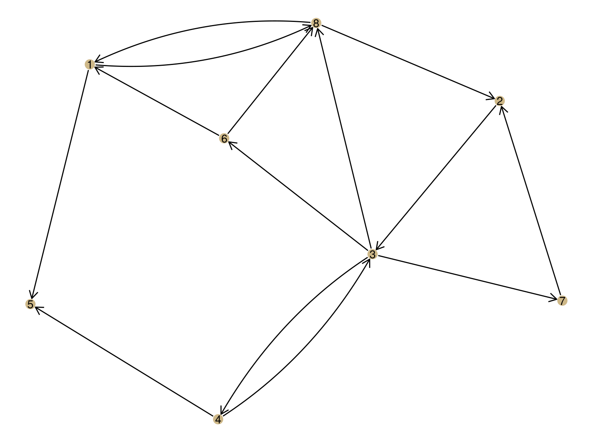
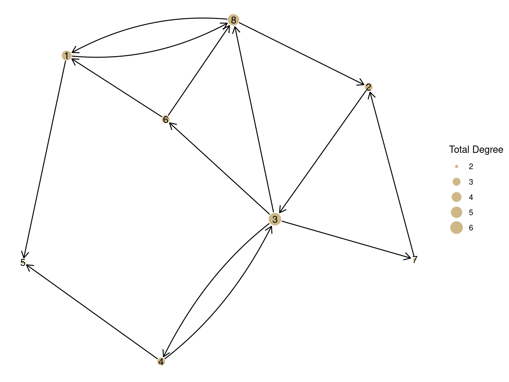
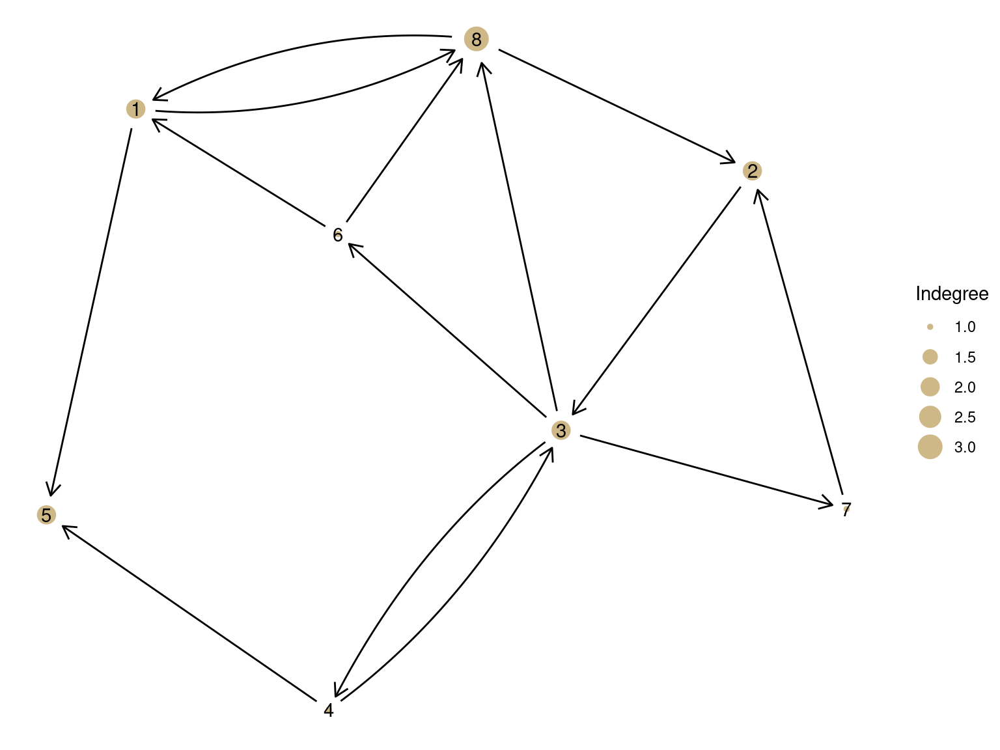
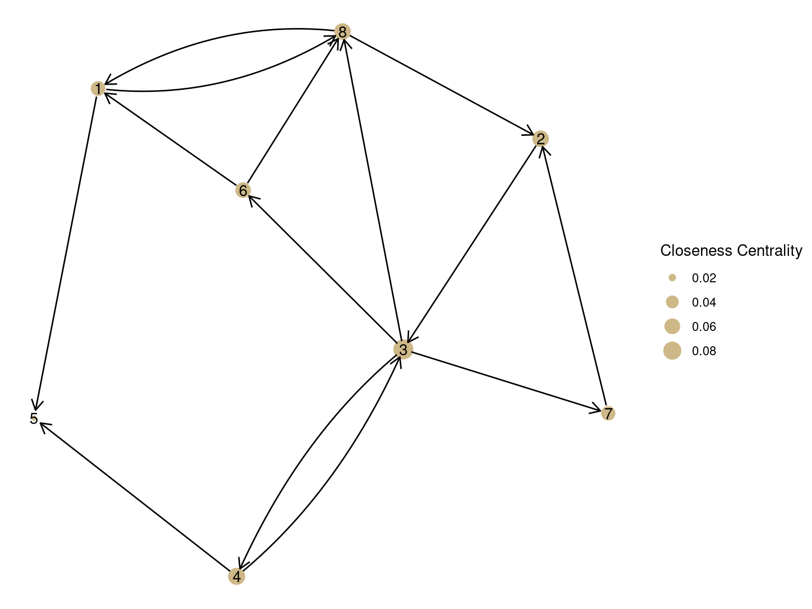
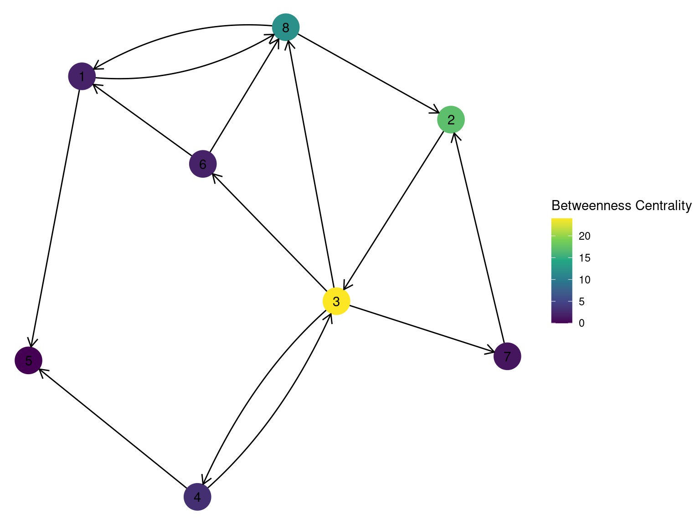

Power has long been a central concern of social scientists. The famous sociologist Max Weber defined it as the ability to control others or resources - to realize one’s will.
Some of this power comes in the form of “social capital” - the idea that there is power in our relationships - through mobilizing the resources of those we are connected to.
The construct of power has many facets and over the years social network analysts have come up with a number of different algorithms for measuring different aspects of power in networks. These are usually called “centrality measures”. The intuition is that those in the center of a visualized network are typically those with the most power.
Degree centrality is simply the number of connections that someone has. For directed networks, indegree can be interpreted as popularity and outdegree as gregriousness.
Let’s start with this network.
set.seed(23)
G = as_tbl_graph(random.graph.game(8, .25, directed = T))
G %>%
ggraph() +
geom_node_point(color = '#ceb888', size = 4) +
geom_node_text(aes(label = 1:8)) +
geom_edge_fan(arrow = arrow(length = unit(3, 'mm')),
start_cap = circle(2, 'mm'), # These tell the arrows where to start and end
end_cap = circle(2, 'mm')
)## Using `stress` as default layout Now, let’s show the degree centrality by changing the size of nodes. Here is the total degree centrality
G %>%
activate(nodes) %>%
mutate(degree = centrality_degree(mode = 'all')) %>%
ggraph() +
geom_node_point(aes(size = degree), color = '#ceb888') +
geom_node_text(aes(label = 1:8)) +
geom_edge_fan(aes(end_cap = circle(node2.degree + 3, "pt"), # Why did the start_cap and end_cap move inside of aes()?
start_cap = circle(node1.degree + 2, "pt")),
arrow = arrow(length = unit(3, 'mm'))) +
scale_size_continuous(name='Total Degree') # Can you figure out what this is doing?## Using `stress` as default layout
Note how this changes when we show indegree/popularity
G %>%
activate(nodes) %>%
mutate(degree = centrality_degree(mode = 'in')) %>%
ggraph() +
geom_node_point(aes(size = degree), color = '#ceb888') +
geom_node_text(aes(label = 1:8)) +
geom_edge_fan(aes(end_cap = circle(node2.degree + 2,"mm"),
start_cap = circle(node1.degree + 2, "mm")),
arrow = arrow(length = unit(3, 'mm'))) +
scale_size_continuous(name='Indegree')## Using `stress` as default layout
Now it’s your turn. How would you edit the code above to show outdegree (or gregariousness)? What do you learn / notice based on comparing these three measures?
This measure tries to capture how much a node is literally in the center of a graph. It is a measure of the average distance to each other node.
G %>%
activate(nodes) %>%
mutate(centrality = centrality_closeness()) %>%
ggraph() +
geom_node_point(aes(size = centrality), color = '#ceb888') +
geom_node_text(aes(label = 1:8)) +
geom_edge_fan(aes(end_cap = circle(node2.centrality + 2,"mm"),
start_cap = circle(node1.centrality + 2, "mm")),
arrow = arrow(length = unit(3, 'mm'))) +
scale_size_continuous(name = "Closeness Centrality")## Warning in closeness(graph = graph, vids = V(graph), mode = mode, weights =
## weights, : At centrality.c:2784 :closeness centrality is not well-defined for
## disconnected graphs## Using `stress` as default layout
What do you notice about what’s different here?
This measure counts the number of shortest paths that go through each node. This is based on the value of being in a “structural hole”.
Look again at the network and guess which nodes will have the highest betweenness centrality.
After you’ve done that, turn this into a code block (by adding “{r}” after the backticks) and then find the bug in the code below so that it shows betweenness centrality
G %>%
activate(nodes) %>%
mutate(centrality = centrality_betweenness()) %>%
ggraph() +
geom_node_point(aes(size = centrality), color = '#ceb888') +
geom_node_text(aes(label = 1:8)) +
geom_edge_fan(end_cap = circle(node2.centrality + 2,"mm"),
start_cap = circle(node1.centrality + 2, "mm"),
arrow = arrow(length = unit(3, 'mm'))) +
scale_size_continuous(name = "Betweenness Centrality")The last important measures of centrality is eigenvector centrality. The calculation is complicated and based on matrix algebra but the concept is pretty simple: all else being equal, a node is more powerful if it’s connected to a node that’s well-connected.
This is actually the basis of Google’s original search algorithm, and is part of what made them successful.
G %>%
activate(nodes) %>%
mutate(centrality = centrality_eigen()) %>%
ggraph() +
geom_node_point(aes(size = centrality), color = '#ceb888') +
geom_node_text(aes(label = 1:8)) +
geom_edge_fan(aes(end_cap = circle(node2.centrality + 2,"mm"),
start_cap = circle(node1.centrality + 2, "mm")),
arrow = arrow(length = unit(3, 'mm'))) +
scale_size_continuous(name = "Eigenvector Centrality")## Using `stress` as default layout
Why does Node 5 have such low centrality? Why does 8 have such high centrality?